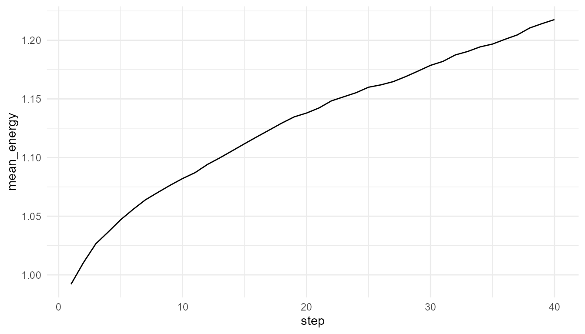
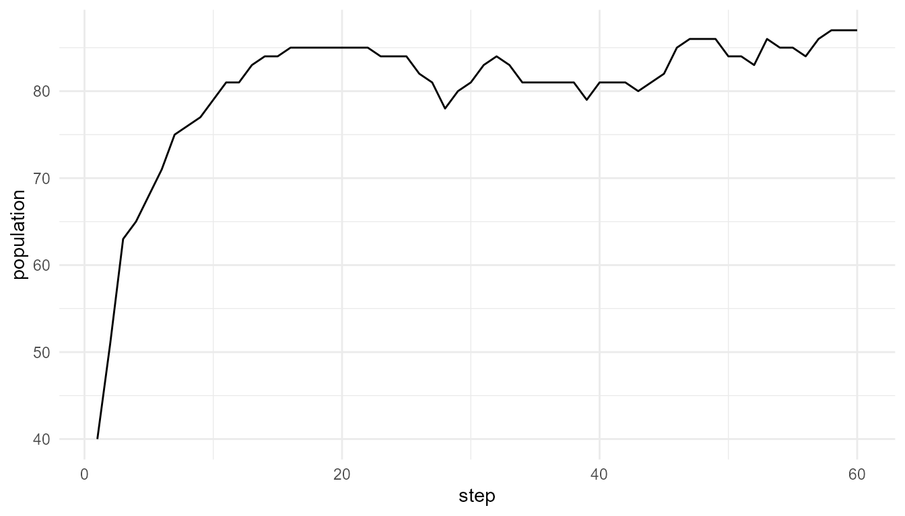

Overview
artificialLifeR is an educational R package for
exploring artificial-life ideas through simplified simulations. The
package focuses on agents, resources, reproduction, mutation, selection,
population dynamics, and life-like complexity.
The central idea is:
Life-like patterns can arise from local interaction, variation, inheritance, and environmental constraint.
The simulations are toy models. They are designed for teaching and conceptual exploration, not for realistic biological prediction.
What the package helps you explore
| Model family | Main question | Core function |
|---|---|---|
| Agents and traits | What are the artificial individuals? | create_agents() |
| Resource competition | How do agents interact with an environment? | simulate_resource_competition() |
| Reproduction | How can offspring inherit traits? | simulate_reproduction() |
| Mutation | How does variation enter a population? | simulate_mutation() |
| Selection | How do some agents persist more than others? | simulate_selection() |
| Population dynamics | How does population size change over time? | simulate_population_dynamics() |
| Measurement | How can outputs be summarized? | measure_life_like_complexity() |
First example: create agents
agents <- create_agents(
n_agents = 50,
seed = 1
)
head(agents)
#> agent x y energy speed efficiency
#> 1 1 0.2655087 0.47761962 1.0597159 0.03759267 0.5450187
#> 2 2 0.3721239 0.86120948 0.9081960 0.05084232 0.4981440
#> 3 3 0.5728534 0.43809711 1.0511680 0.03178157 0.4681932
#> 4 4 0.9082078 0.24479728 0.8305955 0.05316058 0.4070638
#> 5 5 0.2016819 0.07067905 1.2149536 0.03690831 0.3512540
#> 6 6 0.8983897 0.09946616 1.2970600 0.08534575 0.3924808
#> reproduction_threshold age alive
#> 1 1.540940 0 TRUE
#> 2 1.668887 0 TRUE
#> 3 1.658659 0 TRUE
#> 4 1.466909 0 TRUE
#> 5 1.271476 0 TRUE
#> 6 1.749766 0 TRUEInterpretation
Each row represents one artificial agent. The agents have positions, energy, and simple traits such as speed and efficiency.
These agents are not organisms. They are simplified units for exploring artificial-life ideas.
Resource competition
competition <- simulate_resource_competition(
n_agents = 50,
steps = 40,
resource_regen = 0.20,
seed = 2
)
head(competition$summary)
#> step n_alive mean_energy mean_resource total_resource
#> 1 1 50 0.9920413 0.7355619 22.06686
#> 2 2 50 1.0104519 0.7045157 21.13547
#> 3 3 50 1.0265316 0.6795264 20.38579
#> 4 4 50 1.0365931 0.6723698 20.17109
#> 5 5 50 1.0469975 0.6577956 19.73387
#> 6 6 50 1.0557799 0.6461239 19.38372Plot average energy
plot_alife_sim(
competition$summary,
x = "step",
y = "mean_energy",
type = "line"
)
Measure life-like complexity
measure_life_like_complexity(
competition$agents,
trait_col = "energy",
time_col = "step"
)
#> n unique_values entropy mean sd temporal_variability
#> 1 2000 1999 2.90035 1.130187 0.5258798 0.06078271
#> mean_abs_change
#> 1 0.005784354Population dynamics
pop <- simulate_population_dynamics(
initial_population = 40,
steps = 60,
carrying_capacity = 100,
seed = 3
)
head(pop$summary)
#> step population mean_energy mean_efficiency trait_sd
#> 1 1 40 1.200125 0.4912442 0.1216771
#> 2 2 51 1.088529 0.5132234 0.1215461
#> 3 3 63 1.000476 0.5186715 0.1169869
#> 4 4 65 1.043270 0.5173388 0.1159313
#> 5 5 68 1.071840 0.5147596 0.1142854
#> 6 6 71 1.088787 0.5247883 0.1217227
plot_alife_sim(
pop$summary,
x = "step",
y = "population",
type = "line"
)
Suggested learning path
- Start with
create_agents()to understand traits and populations. - Use
simulate_resource_competition()to explore agents in an environment. - Use
simulate_reproduction()andsimulate_mutation()to explore inheritance and variation. - Use
simulate_selection()to explore fitness-based survival. - Use
simulate_population_dynamics()to study population-level change. - Use
measure_life_like_complexity()andplot_alife_sim()to summarize and visualize outputs. - Read the Theory Guide to connect the code to artificial life, emergence, origin-of-life research, and responsible interpretation.